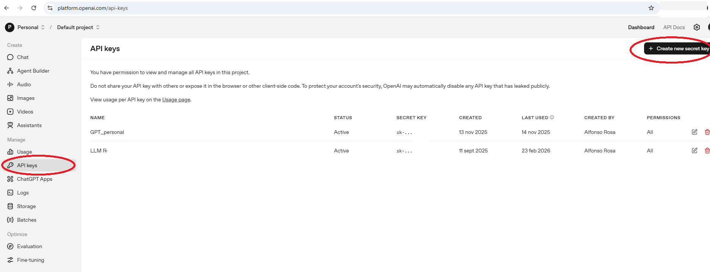
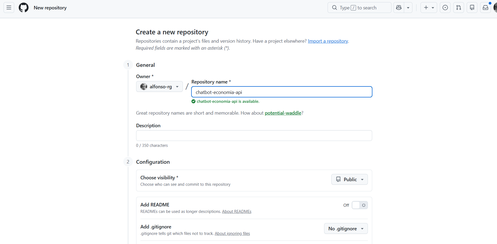
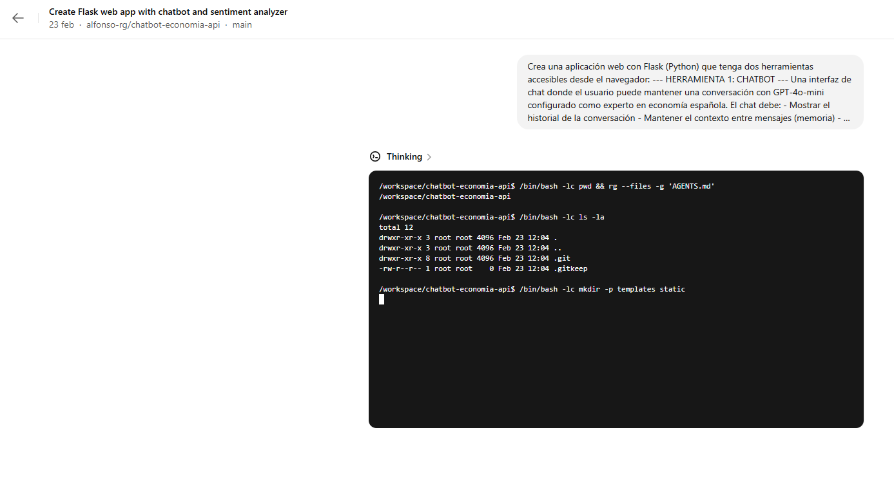
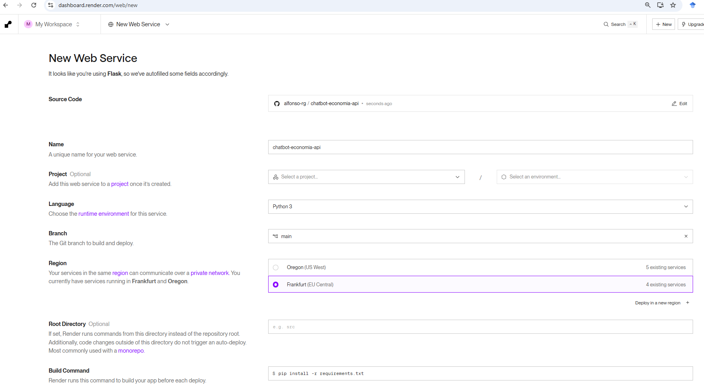
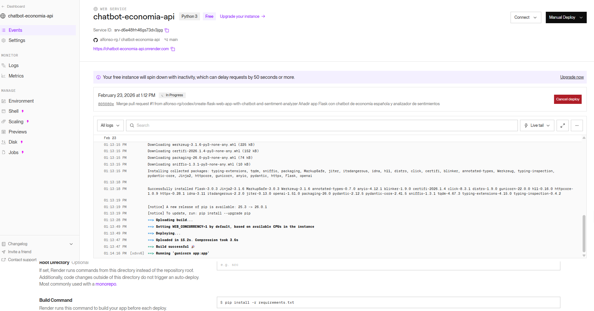
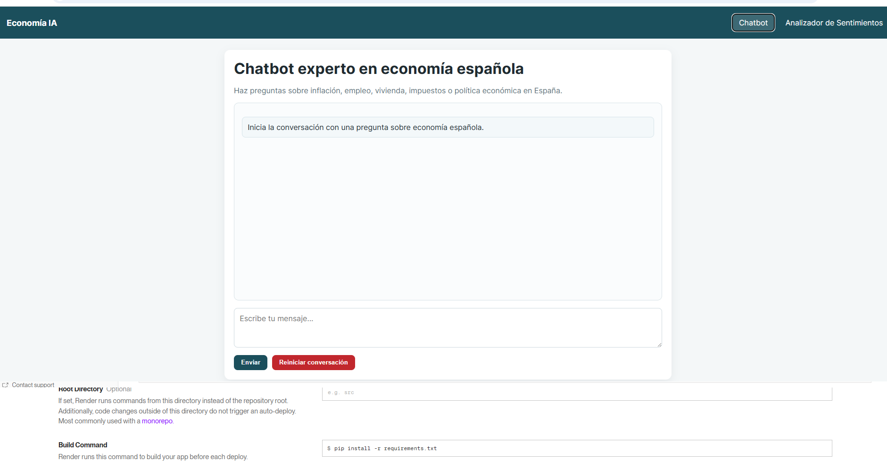

🎯 ¿Qué vamos a construir?
En esta tarea construiremos una aplicación web real con backend Python que se conecta directamente a la API de OpenAI. La aplicación tendrá dos herramientas:
- 💬 Chatbot de economía: un asistente conversacional con memoria de la sesión, configurable con instrucciones de sistema propias.
- 📈 Analizador de sentimientos: introduce un texto o sube un archivo CSV con frases, y la IA clasifica cada una como positiva, negativa o neutra con nivel de confianza.
El código lo generará la IA mediante vibe coding (Tarea 5). Nosotros describimos, ella programa. Al final, lo desplegaremos en Render.com para tener una URL pública.
📌 Modelos disponibles y costes
| Modelo | Proveedor | Coste aprox. (por millón de tokens) | Mejor para |
|---|---|---|---|
| GPT-4o mini | OpenAI | ~0.15 $ (entrada) / ~0.60 $ (salida) | Tareas cotidianas, muy barato — el que usaremos |
| GPT-4o | OpenAI | ~2.50 $ / ~10 $ | Mayor calidad de respuesta |
| GPT-5.2 | OpenAI | ~2 $ / ~8 $ | Lo más avanzado disponible |
| Claude 3.5 Haiku | Anthropic | ~0.80 $ / ~4 $ | Rápido y económico |
| Claude Opus 4.6 | Anthropic | ~15 $ / ~75 $ | Máxima calidad |
| Gemini 3 Flash | ~0.15 $ / ~0.60 $ | Muy barato, alta velocidad |
🚀 Guía paso a paso
Parte A: Obtener la API key
Obtén una API key de OpenAI y carga crédito
Ve a platform.openai.com, crea una cuenta (o inicia sesión) y sigue estos pasos:
- En el menú de la izquierda, ve a «API keys»
- Haz clic en «Create new secret key»
- Ponle un nombre descriptivo (ej. taller-umu) y copia la clave generada
- Guárdala en un sitio seguro: solo se muestra una vez
- Ve a «Billing» → «Add payment method» y añade ~5 € de crédito

Parte B: Crear el repositorio en GitHub
Crea un repositorio GitHub para el proyecto
Render despliega directamente desde GitHub. Crea antes el repositorio que alojará el código:
- Ve a github.com e inicia sesión
- Haz clic en «+» → «New repository»
- Ponle el nombre
chatbot-economia-api - Márcalo como Public y activa «Add a README file»
- Haz clic en «Create repository»

chatbot-economia-api listo para el proyectoParte C: Vibe coding de la aplicación
Genera la app completa con Claude Code o Codex
Usaremos vibe coding (como en la Tarea 5) para que la IA construya toda la aplicación. Vincula Codex a tu repositorio o bien clona el repositorio en tu máquina, entra en la carpeta y lanza Claude Code.
Una vez dentro, dale este prompt completo a la IA:

Parte D: Despliegue en Render
Crea un servicio web en Render
Render.com es un servicio de hosting gratuito que soporta Python/Flask y se conecta directamente a GitHub para despliegue automático.
- Ve a render.com y crea una cuenta (puedes usar tu cuenta de GitHub)
- Haz clic en «New +» → «Web Service»
- Selecciona «Connect a repository» y elige
chatbot-economia-api - Configuración del servicio:
- Name:
chatbot-economia - Runtime:
Python 3 - Build command:
pip install -r requirements.txt - Start command:
gunicorn app:app - Instance type:
Free
- Name:
- Antes de desplegar, ve a «Environment» y añade la variable:
- Key:
OPENAI_API_KEY→ Value: tu clave de OpenAI
- Key:
- Haz clic en «Create Web Service»

OPENAI_API_KEY como variable de entorno en Render, el código Python
la leerá con os.environ.get("OPENAI_API_KEY") sin que aparezca nunca en el
repositorio de GitHub. Así la clave queda segura.
Verifica el despliegue y obtén la URL pública
Render tardará unos 2-3 minutos en construir y desplegar la aplicación. Puedes ver el progreso en tiempo real en los logs de despliegue.
- Cuando el estado cambie a «Live», tu app está disponible
- La URL tendrá la forma:
https://chatbot-economia-api.onrender.com - Prueba las dos herramientas desde el enlace público
- Comparte la URL: cualquiera puede acceder sin instalar nada


💭 ¿Qué hemos conseguido?
- Has obtenido acceso programático a un modelo de IA de última generación
- Has construido un chatbot conversacional con memoria de sesión
- Has construido un clasificador de sentimientos que procesa texto libre y archivos CSV en lote
- Todo el código lo ha generado la IA mediante vibe coding
- La aplicación está desplegada en internet con una URL pública y permanente
- La API key está protegida como variable de entorno, nunca expuesta
- Procesamiento en lote: analiza cientos de artículos automáticamente
- Extracción de datos: extrae información estructurada de informes PDF
- Clasificación temática: categoriza artículos de prensa por tema económico
- Traducción académica: traduce abstracts manteniendo terminología técnica
- Resumen automático: resume datasets de texto para revisiones bibliográficas
- Nunca incluyas la API key directamente en el código que subas a GitHub
- Usa siempre variables de entorno para las claves secretas
- Configura un límite de gasto mensual en el panel de OpenAI
- Revoca y regenera la clave si sospechas que ha quedado expuesta